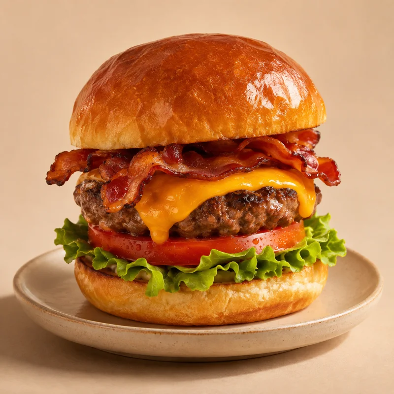

CONVÍVIUM · DO PEDIDO À GESTÃO
A sua marca
na experiência.
Convívium na gestão.
Duas aplicações conectadas. O consumidor pede com a marca da loja. A empresa controla a operação no seu ERP.
EMPRESA PILOTO Brasa BurgerIdentidade própria. Gestão integrada.
O CORAÇÃO DA OPERAÇÃO
Uma visão do negócio.
Brasa Burger Por Convívium

Seu próximo favorito.
Escolha. Peça. Acompanhe.
Abrir cardápio →Imagem ilustrativaUMA PLATAFORMA PERSONALIZÁVEL
A empresa é cliente do Convívium.
O consumidor é cliente da empresa.
Marca e catálogo próprios para cada contratante. Administradores acompanham suas unidades; gerentes operam a unidade à qual pertencem.
Explorar o modelo de negócio →01 / APLICAÇÃO DO CONSUMIDOR
O pedido começa
com a marca da loja.
Cardápio, cadastro por CPF e acompanhamento do pedido no portal do Brasa Burger.
Se a área não abrir, use o link “Abrir portal em outra aba”.
02 / APLICAÇÃO DA EMPRESA
O coração
do negócio.
O ERP personalizado é o ambiente de trabalho do contratante do Convívium.
Portal e ERP têm sessões independentes. As permissões da conta definem quais dados e ações ficam disponíveis.
Como a tecnologia conecta tudo →BRASA BURGER COMO PILOTO